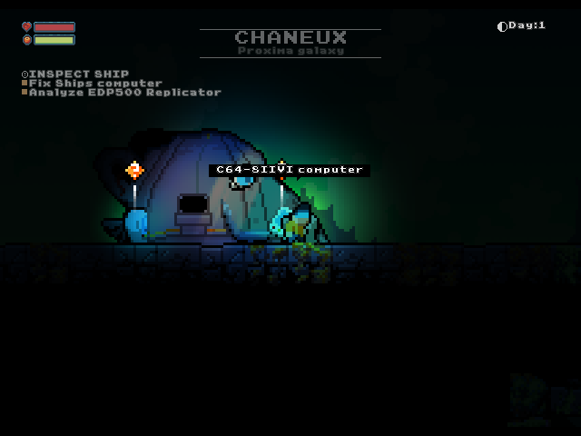
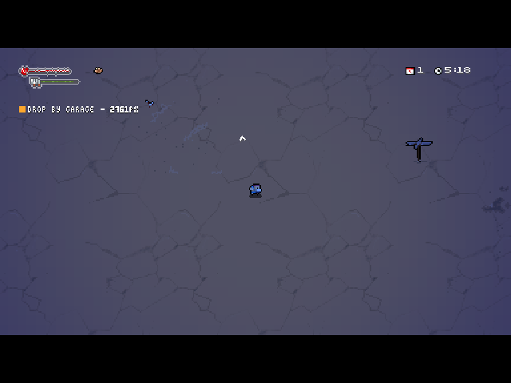
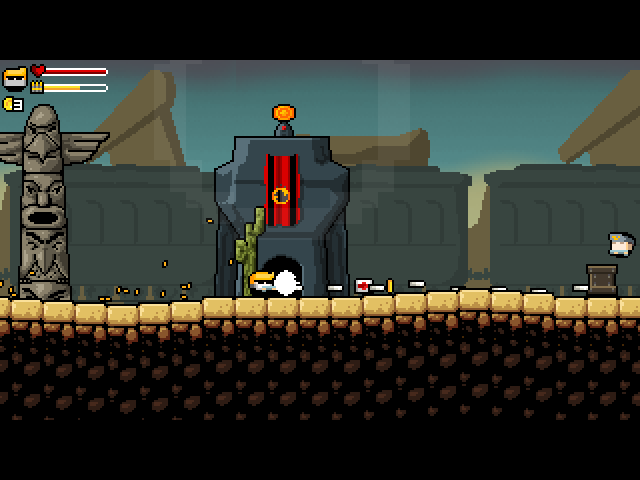
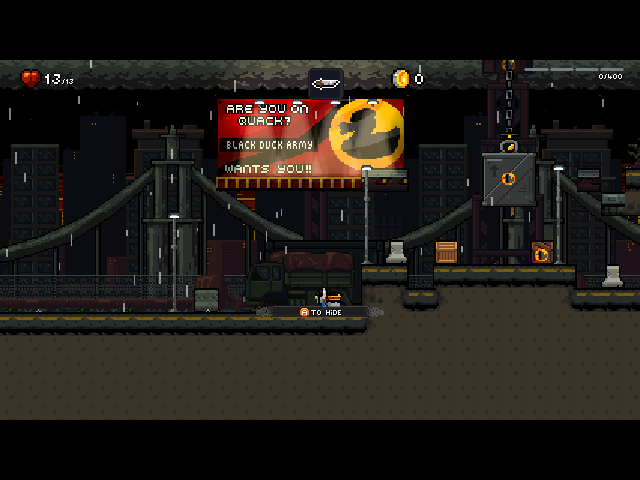
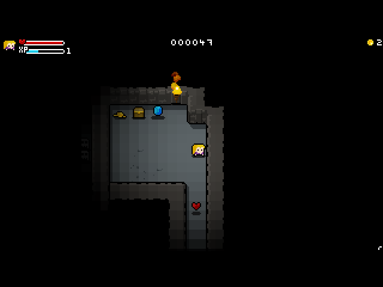
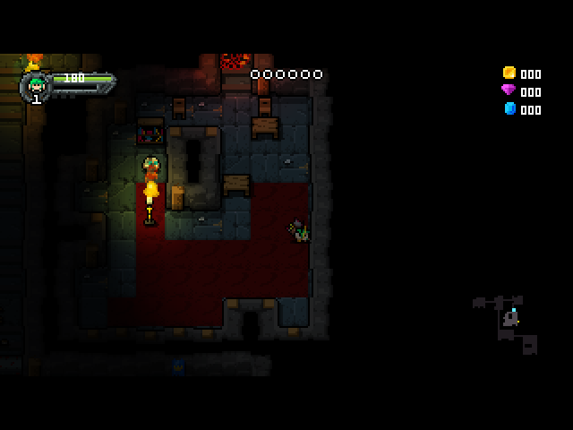
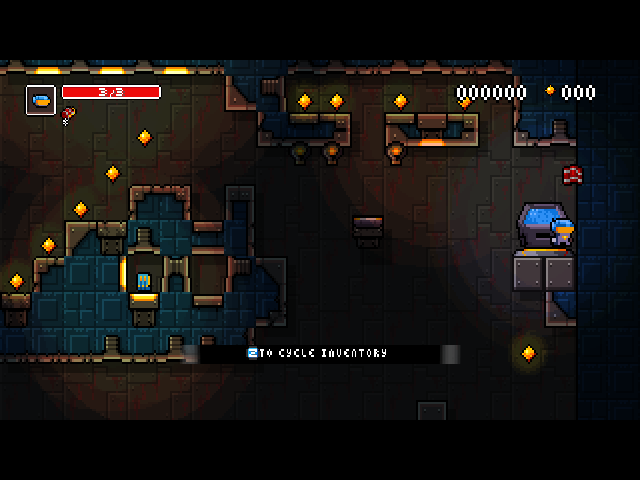
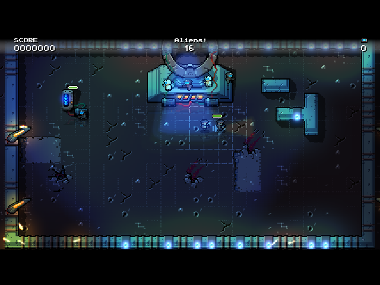
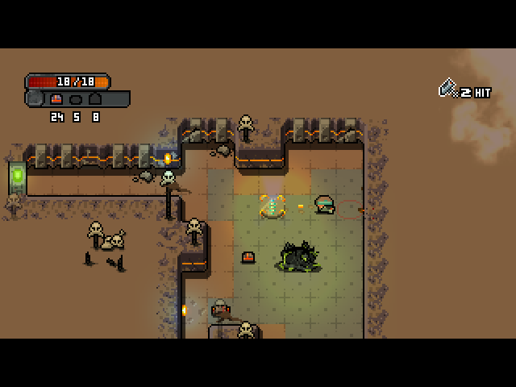
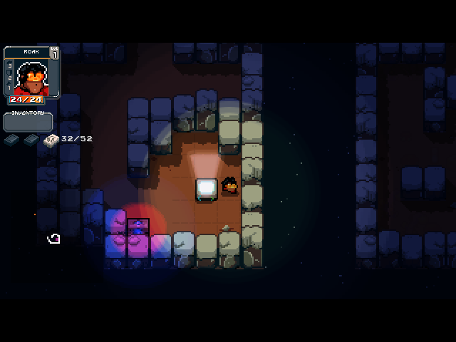

EXPLORE PORT ↗ACTION / PLATFORMER
Residual
Explore alien planets, gather resources and repair your ship in this procedurally generated survival platformer by Orangepixel.
BYO GAME DATAView port ↗
◆ INDEPENDENT PORTS FOR ARM LINUX
Your favorite indie worlds, reforged for retro handhelds.
Made for the PortMaster ecosystem by Ronax.
PICK YOUR NEXT ADVENTURE
Showing 12 ports

EXPLORE PORT ↗ACTION / PLATFORMER
Explore alien planets, gather resources and repair your ship in this procedurally generated survival platformer by Orangepixel.

EXPLORE PORT ↗ACTION / PLATFORMER
Survive a pixel-art wasteland, scavenge buildings, drive vehicles and fight its inhabitants.
 EXPLORE PORT ↗
EXPLORE PORT ↗ACTION / PLATFORMER
Run, jump and shoot through chaotic pixel-art battlefields, smash scenery and rescue characters in this action platformer by Orangepixel.

EXPLORE PORT ↗ACTION / PLATFORMER
Run, jump and shoot through chaotic action-platforming missions against the Black Duck Army.

EXPLORE PORT ↗ACTION
Choose stealth or gunfire as you complete missions through procedurally generated enemy territory.

EXPLORE PORT ↗ACTION / RPG
Battle dungeon monsters, collect treasure and complete quests in a fast-paced dungeon crawler.

EXPLORE PORT ↗ACTION / RPG
Switch between heroes to solve dungeon puzzles and fight through monster-filled rooms.

EXPLORE PORT ↗ACTION
Explore dangerous generated spaceship levels, evade traps and collect upgrades in a challenging platformer.
 EXPLORE PORT ↗
EXPLORE PORT ↗RPG / STRATEGY
Explore a dungeon through pairs of choices, collect equipment and learn how to defeat its creatures.

EXPLORE PORT ↗ACTION
Lead a growing squad of soldiers through alien battles using Snake-style movement.

EXPLORE PORT ↗RPG / STRATEGY
Explore hostile space facilities and use weapons and items in turn-based tactical battles.

EXPLORE PORT ↗RPG / STRATEGY
Combine turn-based exploration with card-based encounters in procedurally generated space facilities.
Try another title or genre.
Every download is a bring-your-own-data package. Original games are sold separately.
FROM DOWNLOAD TO D-PAD
Pick a game above. Check the exact required Windows game version in its guide, then download the port ZIP.
Put the ZIP in PortMaster’s autoinstall/ folder. Open PortMaster and let it install the port and required runtimes.
Copy the files from your purchased game to the folder in its guide. Launch from your handheld’s ports menu.
MEET THE MAKER
PixelForge Ports is Ronax’s collection of indie game adaptations for ARM Linux handhelds. The aim is simple: bring more of the games you own to the devices you love.
These independent ports use PortMaster’s tools and runtimes. They are not official releases from the original game developers. Credit for each game stays with its creators.
Follow the work on GitHub ↗KEEP THE FORGE GLOWING